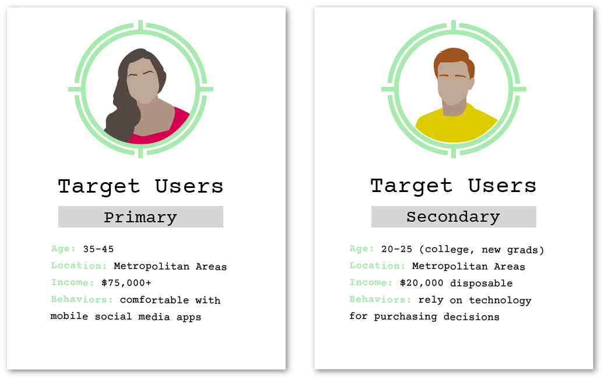

Klean Kart
Interactively track your carbon foodprint (carbon emissions from food) and make more sustainable food purchases. It is now easier than ever to shift into environmentally friendly habits.

4 contributors

2020
Tools & Languages:


Relevant skills: UI, UX, Android Development, User Interviews
Problem
A quarter of the world's greenhouse gas emissions is from food production. As climate change continues to ravage our planet, climate conscious consumerism becomes an increasingly vital part of the conversation. The only way to track carbon foodprints currently is through arduous google searches or apps that require manual entries for every food item used. This hassle deters many consumers from tracking and becoming aware of their footprints.
Solution
Klean Kart leverages Android's Google Vision API to scan barcodes of food items, so users can easily check the environmental impacts of grocery items as they shop and easily track the footprints of their purchases. Users also have the option to search up food items and be given a list of sustainble alternatives.
From Paper Prototypes to Low-Fidelity Designs
Task Analysis - Key Workflows
Review progress reports to track progress towards a lower footprint
Scan barcodes, identify food products, and receive corresponding carbon emissions information
Add items to shopping cart and "check out" to update personal carbon foodprint history
Save previous searches to purchase at a later time (allow users to use the app as a shopping list, planning purchases ahead of time)
Quick search to scan a barcode just to check carbon emissions, with no intention of consuming the product (doesn't add item to cart or check out item)
Iterations to Final Product
For the next few weeks, our team was busy conducting user interviews, usability tests, and heuristic evaluations to improve the user experience of the app. We sought both our primary and secondary target users to get a better idea of how we can serve their needs more effectively.
While we made numerous changes over the weeks, a few key highlights were:
Dietary Preferences: app will automatically prioritize food items that align with set preferences and warn users if searched items violate them. All food items will display relevant dietary tags (e.g. vegan, dairy-free)
Store-Based Carts: users can organize their shopping carts based on store
Improved Quick Search: if users decide to purchase a product after a quick search for its carbon data, they have option to add item to a new or existing cart
Final Prototype
01
Add item by lookup > different options given, ranked by CO2 emissions with dietary restrictions prioritized > view CO2 emissions > adjust quantity > add to cart > view updated cart
02
Quick scan > scan barcode > product identified > view CO2 emissions > have option to add to a cart
03
View progress reports > current status > weekly report > total report